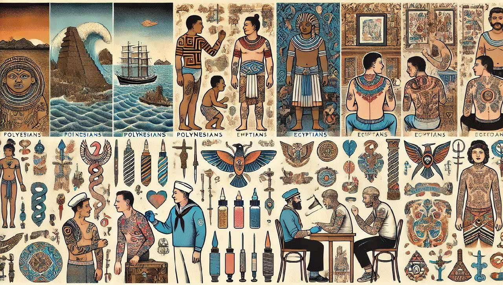
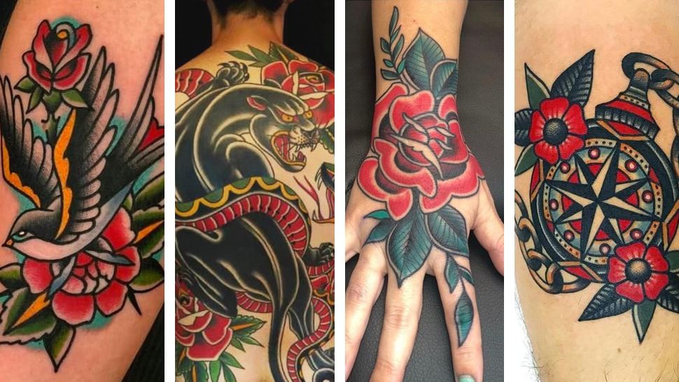

Nuestros trabajos destacados


Un poco de historia del tattoo
Los tatuajes han recorrido un largo camino a lo largo de la historia, desde sus primeras manifestaciones en civilizaciones antiguas como Egipto, Grecia y Roma, donde se usaban como símbolos de estatus, protección o ritos religiosos. En culturas indígenas de África, Oceanía y América, los tatuajes representaban la conexión con la espiritualidad, la madurez o la identidad tribal. Durante siglos, los tatuajes fueron relegados a grupos marginales o vinculados a la delincuencia, pero con la llegada del siglo XX, especialmente en las décadas de 1960 y 1970, comenzaron a ganar popularidad como una forma de expresión artística y personal. Hoy en día, los tatuajes se han integrado plenamente en la cultura moderna, con una enorme variedad de estilos y técnicas, siendo considerados una forma legítima de arte corporal que trasciende fronteras sociales y culturales.
Estilos y técnicas de tatuaje
Existen diversos estilos de tatuajes, cada uno con características y tradiciones propias. El estilo tradicional se caracteriza por líneas gruesas, colores sólidos y diseños simbólicos como anclas, corazones o rosas. El tribal, con raíces en culturas indígenas, usa patrones geométricos y líneas negras para representar fuerzas espirituales o identidades. El realismo busca replicar imágenes de forma precisa, casi fotográfica, mientras que el neo-tradicional mezcla la estética tradicional con un uso más detallado de sombras y colores. En cuanto a las formas de tatuar, el uso de máquinas profesionales ha sido la norma desde el siglo XX, pero antes de ellas, se empleaban herramientas primitivas como dientes de hueso o agujas hechizas para perforar la piel. Estos métodos eran más dolorosos y rudimentarios, pero mostraban la ingenio de las culturas en la creación de tatuajes sin acceso a tecnología avanzada.
